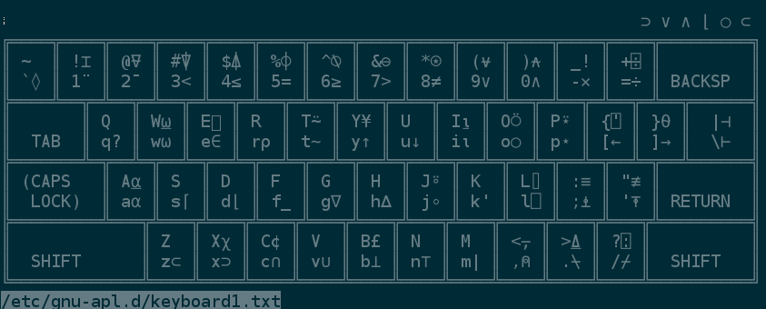

In order to run the GNU APL
interpreter on OpenBSD, that to the best of my knowledge seems to be
one of the very few free
APL interpreters
available, I created a port that I currently mantain and that will be part
of the next OpenBSD release (by the time of this writing is planned to be
the 6.2). I also packaged
Adrian Smith's original
fonts, which are now a dependency of the GNU APL package.
For the time being I host both ports on my home page as well.
However, a little tuning is required before the interpreter is actually
usable, and this post serves the purpose of collecting all the necessary
steps in one place.
We install the two ports first (note that the download is not necessary
on -current or from 6.2 on):
cd /usr/ports/
ftp -o - http://sbudella.altervista.org/stuff/apl-fonts.tgz | tar -C fonts/ -xzvf -
ftp -o - http://sbudella.altervista.org/stuff/apl.tgz | tar -C lang/ -xzvf -
cd lang/apl && make install
The first thing we need to enable after we installed the two packages is
the UTF-8 character encoding in the locale; I added the following lines to
my .profile file:
export LC_CTYPE=en_US.UTF-8
export LESSCHARSET=utf-8
We need to do the same for X, and at the same time specify which font
set we want to use; I have the following lines in my .Xdefaults,
the latter of which is one of the two fonts that the apl-fonts
package installed in /usr/local/share/fonts/apl:
XTerm*locale:utf8
xterm*faceName:APL385
The above steps are enough to ensure that the system displays APL symbols
correctly. In order to verify it, the file
/etc/gnu-apl.d/keyboard1.txt must show something like this:

The picture shown provides us with a good starting point
for the keyboard layout; as better explained in the documentation, there are
many a way to configure the keyboard to use the APL symbols, either system
wide or circumscribed to the APL interpreter only. My personal preference
is to dedicate ten minutes to writing a custom .XCompose that
would spatially map the APL symbols exactly as shown in the picture to
the keyboard regardless of whatever layout the latter has. This approach
has the benefit of letting us use keyboard1.txt as a quick
mnemonic reference as it is (it works great in a tmux pane, for the
ultimate IDE experience).
There are better news for the lazy: someone else already compiled the
.XCompose
for you. So what is left is to define the compose key in .xinitrc,
in my case it's the right control key in order not to clash with tmux and cwm:
setxkbmap -option compose:rctrl
We are now able to use the best programming language on the best operating system
with no clutter.